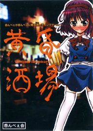

- Welcome to Touhou Wiki!
- Please register to edit. For assistance, check in with our Discord server or IRC channel.
Uwabami Breakers
Uwabami Breakers | |
|---|---|
|
 Official CD cover
| |
| Developer |
The Drinking Party |
| Publisher | |
| Released |
1.0a: December 29, 2007 (Comiket 73) |
| Genre |
Vertical Danmaku Shooting Game |
| Gameplay |
Single-Player Story Mode |
| Platforms | |
| Requirements |
DirectX 9.0c (Nov. 2007), Pentium 3 (equivalent or better) CPU @800MHz+, 32MB VRAM, 100MB disk space |
| Official Site | |
- "Tasogare Sakaba" redirects here. For the location, see Twilight Bar Room.
Concept[edit]
The game was inspired to be based around alcoholism, to which the origin of the idea was members of The Drinking Party and ZUN were at a bar one night drinking and someone said "Hey, why not make a game?" Apparently, the game was on a tight timeline and the creation was spent from 13 to 29 of December, 2007. The game's engine is based on Mountain of Faith, hence most of ZUN's involvement of the game. According to him, he took the hardest part of the creation. It's got graphics and danmaku that seems exactly the same as seen in various Touhou Project games.
Name[edit]
The kanji 黄昏 (Tasogare, lit. "Twilight") is identical to the kanji on the Japanese title of Twilight Frontier (黄昏フロンティア), but the Japanese title actually translates into the name of the game's main location: Twilight Bar Room. Apparently, many fans got confused whether this game had something to do with Twilight Frontier or not due to the kanji 黄昏. ZUN later confirmed in an interview that the game has nothing to do with Twilight Frontier.
"Uwabami" is a romaji of "
Gameplay[edit]
Uwabami Breakers' gameplay is very similar to Mountain of Faith's gameplay (which is fitting, given that they use the same game engine). Players shoot incoming enemies (items of food and drink) as they fall and dodge the bullets that they shoot. The player has a Beer Gauge, which fills as the player shoots down enemies that have a 'chink' sound when they are shot down. All other enemies do not add to the beer gauge. The gauge fills at 3 liters, and the player's shot power increases with every liter of beer. Bombing results in a forward-facing attack that depletes the beer gauge by 1 liter. The capacity of the beer gauge is also decreased by 0.1 liters until the end of the level.
The menu category is essential to scoring. Somewhat like Mountain of Faith, you'll always want to be shooting down enemies on the screen to keep the menu category high.
- 並 — Normal/Average
- 上 — High (reached after defeating 3 enemies in a row)
- 特上 — Very High (reached after defeating 9 enemies in a row)
- 至高 — Supreme (reached after defeating 17 enemies in a row)
As the menu category goes up, the amount of points you get for shooting them down goes up in a certain way depending on the enemy shot down.
The standard Touhou control scheme (Shift for focus fire, Z to fire, X to bomb) applies. However, holding down the fire button results in a charge shot, like in Phantasmagoria of Dim.Dream and Phantasmagoria of Flower View, which releases a barrage of chopsticks that stay in place when fired for a few seconds, then start homing towards any nearby enemies on screen. The C button produces standard rapid-fire. Typically, the barrage of chopsticks is more powerful than the standard rapid fire.
The player makes their way through three stages, each of which has a boss at the end. On the left of the screen is a time gauge. The level begins with the time at the bottom, and as play progresses the time slowly advances toward the time at which that bar's last call (Last Order) occurs. Players must make it to the boss before Last Order. Uwabami Breakers doesn't have lives, per se - instead, dying results in the time moving forward by a certain amount. Once a player makes it to the boss, they can die as much as they want until Last Order time occurs. If the Last Order time comes before the player makes it to the boss, or the player dies on the boss after Last Order, the player is kicked out of that establishment and the game ends. Boss gameplay is the standard Touhou fare (normal attacks alternating with spell cards that can be captured for bonuses). During certain sections of the boss, getting too close will result in them releasing a short range circle of knives.
ZUN has stated in an interview that in this game, "It's not dodging, it's beer-ing."
Story[edit]
A twilight bar-room.
A heaven on earth where even the lowest of drunkards sleeps peacefully.
This was the home of a group of master bartenders who boasted they could send even the heaviest of drinkers under the table.
These bartenders, called the "Uwabami Breakers" (or "Drunkard Breakers") devoted their every waking hour to devising new menus every day.
Many brave men had fallen to their menus.
Even though the wasted drunks were afflicted with the worst of hangovers every day, they couldn't resist the masters' stimulating new menus.
That was just as the masters had planned.
Nobody dreamed of defying the "Uwabami Breakers" in this bar.
Except for one certain drunk.
Characters[edit]
The characters in Uwabami Breakers are unique, apart from one. They all aren't Touhou Project characters and thus shouldn't be treated as such. The only playable character is:
| 黄昏の怪物ＯＬ Twilight's monster OL Isami Asama She seeks to get cheap beers where heavy drinking is allowed. She discovers Twilight Bar Room and cause mischief there. |
Enemy Characters[edit]
|
| ||||
|
|

Music[edit]
Seven tracks in total were included in the game. In addition, the game does not have a music room, but many music tools support playback and extraction of its music. ZUN only composed one song, while Kossetsu Iryou composed four and Hatori Fuuga and Kiyoma composed one each.
ZUN later arranged "A Drunkard's Lemuria" for the extra CD of Silent Sinner in Blue, renaming it "A Drunkard's Lemuria (Retro Ver)". It was arranged with FM Synthesis.
English patches[edit]
The following Touhou Community Reliant Automatic Patcher repositories provide complete translations of Uwabami Breakers:
- Touhou Patch Center (http://srv.thpatch.net/)
- lang_en / lang_en-gb - Community translation from the Touhou Patch Center wiki
External links[edit]
Official[edit]
Unofficial[edit]
- Lossy download (unofficial) - A custom version of the game, using Ogg Vorbis-encoded BGM to reduce the disk space requirements from 97MB to 20MB without a noticeable drop in quality or performance.